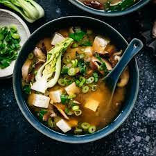

The Best Damn Miso Soup

Description
Making miso soup doesnt have to be hard. Its actually quite a simple procedure and is eaten daily in Japan.
We will be using Dashi ,which is a basic stock used in Japanese cooking. Add more dashi to your soup
if you want a stronger stock. You can choose what miso to use. Yello miso is sweet and creamy, red miso is stronger
and saltier.
Prep: 5 min
Cook: 15 min
Total: 20 min
Servings: 4
Ingredients
- 2 tsp dashi granules
- 4 cups of water
- 3 tablespoons miso paste
- 1 (8 oz) package silken tofu, diced
- 2 green onions, sliced diagonally into 1/2 inch pieces
Instructions
- In a medium saucepan over medium-high head, combine dashi granules and water
- Bring to a boil
- Reduce heat to medium, and whisk in the miso paste.
- Stir in tofu.
- Separate the layers of the green onions, and add them to the soup.
- Simmer gently for 2 to 3 min before serving.